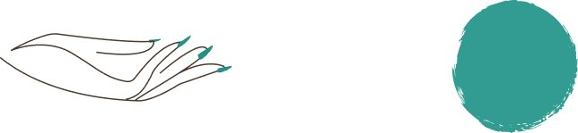
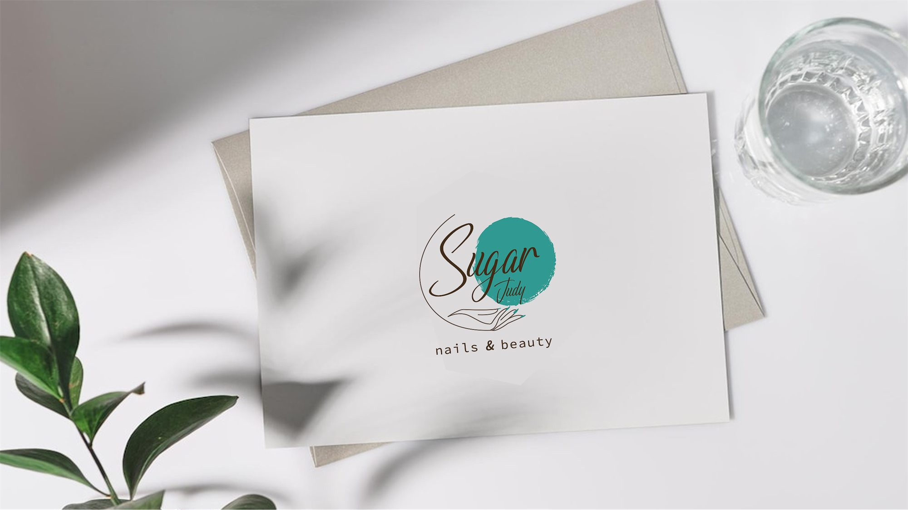
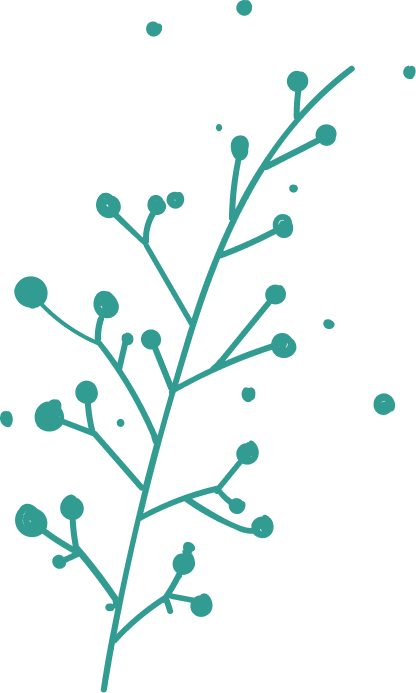
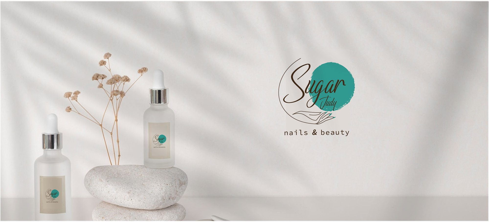

Logo & brand identity
Sugar Judy
Overview
A little sweetness in every detail.
Sugar Judy is a nail and beauty studio where every appointment is a small moment of self-care. The identity had to feel personal and light-hearted, yet clean and professional — as fresh and polished as a new manicure.
- Logo & concept01
- Colour & illustration02
- In the studio03
- Products & packaging04
The Logo
The idea began with two simple elements: a delicate, line-drawn hand and a soft teal dot, like a fresh drop of polish. Flowing script for “Sugar” sits over the dot, with “Judy” tucked in as a personal signature and “nails & beauty” set in a light, open sans.


Hand & dot
The hand stands for care and craftsmanship; the teal dot is the drop of colour that finishes every treatment.
A personal signature
Script lettering makes the name feel handwritten and friendly, like a personal note to every client.
Colour & illustration
A fresh teal gives the brand its signature, softened by a sugared blush taken from the polish itself. A warm cocoa ink keeps the lettering readable, and plenty of white keeps everything clean and hygienic.

A branch of teal
A light botanical branch in the brand teal adds movement around photos and packaging. It grows from the same fine line as the hand in the logo, so every graphic feels part of one family.
In the studio
On white walls the logo becomes a soft focal point — just enough colour to feel welcoming in a bright, calm space made for relaxing.

Care you can see
Photography stays soft, bright and close-up: clean hands, natural light and gentle textures that show the result clients come for.
Products & packaging
01 / 03Next project